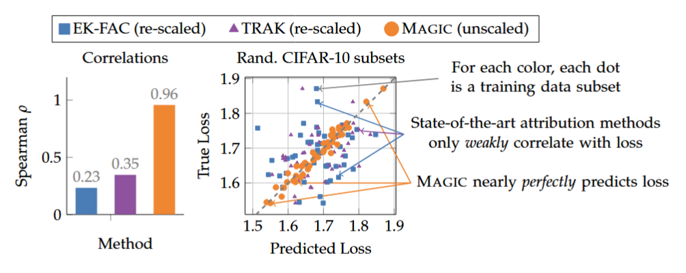

Literature Review: MAGIC: Near-Optimal Data Attribution for Deep Learning
This paper addresses the problem of Predictive Data Attribution (PDA)—estimating how changes to a training dataset (like adding or removing samples) affect the final predictions of a deep learning model. The authors argue that existing approximations (like TRAK and EK-FAC) fail to correlate well with ground truth in non-convex settings because they struggle with the inherent stochasticity of deep learning training and rely on lossy approximations of the influence function.
Key Insights
-
The “Single-Model” Attribution Setting The authors identify a fundamental limitation in prior work: standard data attribution attempts to predict the behavior of a learning algorithm (which is stochastic) rather than a specific trained model. Because training runs vary due to random initialization and data ordering, there is an “irreducible error” when trying to attribute predictions to data in the standard setting. The authors propose “single-model data attribution,” where the learning algorithm is fixed to be deterministic (fixed seeds, order, etc.). This makes the map from data weights to model output a deterministic function, theoretically allowing for perfect attribution.
-
Exact Influence via Metagradients Unlike baselines that approximate the influence function using the inverse Hessian (which is expensive and often inaccurate for non-convex loss landscapes) or linearized proxies, MAGIC computes the exact gradient of the test loss with respect to training data weights. It achieves this by treating the training process as a differentiable graph and using REPLAY, an algorithm for differentiating through optimization steps.

Figure: Correlation between predicted and true loss changes when removing random subsets of data. MAGIC (orange) achieves near-perfect correlation, whereas baselines (blue, purple) show weak correlation and large scale errors.
Example
Consider a scenario where you train a ResNet-9 on CIFAR-10 and want to know: “If I had removed image #42 from the training set, would my loss on test image #7 have increased?”
- Existing Methods (TRAK/EK-FAC): Would approximate the Hessian of the loss surface or linearize the network to guess the answer. The paper shows these guesses are often no better than random for deep networks $(\rho \approx 0.2)$.
- MAGIC: Differentiates through the entire training trajectory of the specific model instance you trained. It calculates the exact derivative $\frac{\partial \text{Loss}{\text{test}}}{\partial w{\text{train_42}}}$.
Ratings
Novelty: 2.5/5 The application of exact metadifferentiation (via the REPLAY algorithm) to the problem of data attribution is an application of existing tools and the conceptual shift to “single-model attribution” feels less like a discovery and more like a necessary experimental control that arguably should have been standard practice.
Clarity: 3/5 The paper clearly defines its components but struggles with precise terminology. Terms like “near-optimal” are used somewhat loosely, and the mathematical notation can be ambiguous at parts, introducing symbols without immediate definition or defining new symbols without a clear usage.
Personal Perspective
While the empirical results are impressively strong, I find the framing of the contributions may be slightly overblown. Specifically, the claim that “single-model data attribution” is a novel contribution seems strange; it is surprising to imply that the entire field of data attribution has previously ignored the necessity of fixing random seeds (temperature, shuffle order, initialization) when trying to isolate the effect of data. If prior works truly treated stochastic variation as an attribution target, that is a methodological flaw in the field, not necessarily a novel discovery of this paper.
Furthermore, the term “near-optimal” is scientifically vague. Optimization usually implies a specific bound or objective, but here it seems to simply mean “very good correlation.” A linear approximation degrades naturally as you move away from the training point (as seen in their 20% drop results), so “optimality” is relative to the local curvature, which isn’t rigorously quantified. Finally, it is somewhat unclear what the specific algorithmic contribution of MAGIC is, distinct from simply applying the REPLAY algorithm (from the authors’ previous work) to the standard definition of an influence function. It feels like a successful recombination of existing high-quality parts rather than a new architectural invention.
Enjoy Reading This Article?
Here are some more articles you might like to read next: